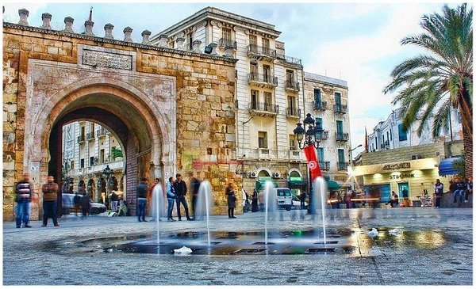
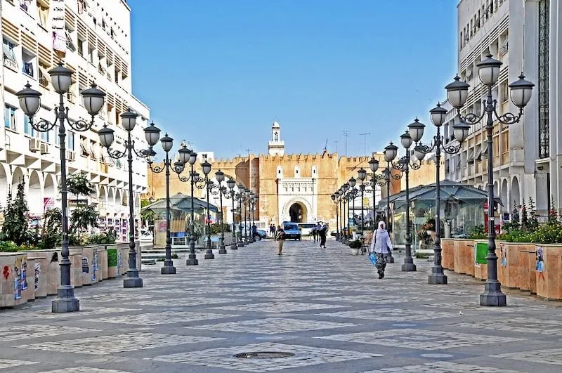
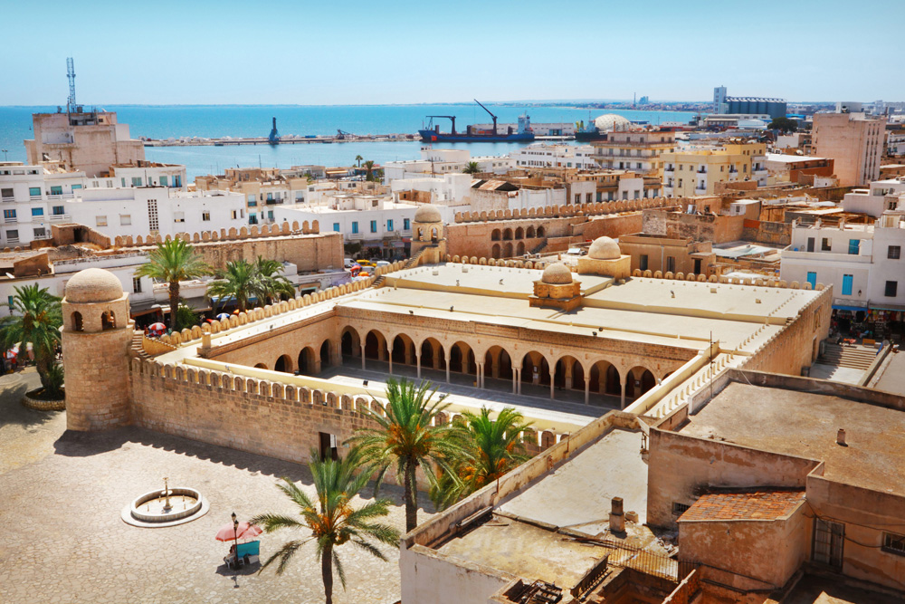
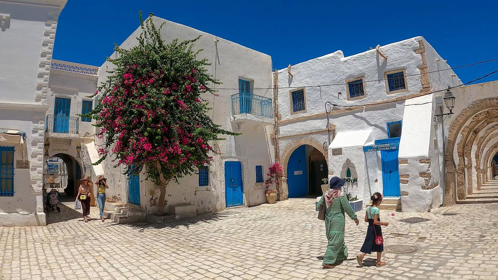
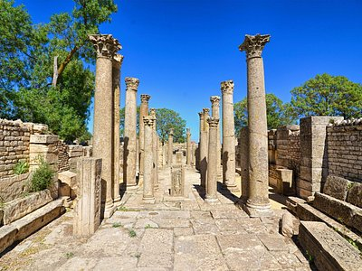
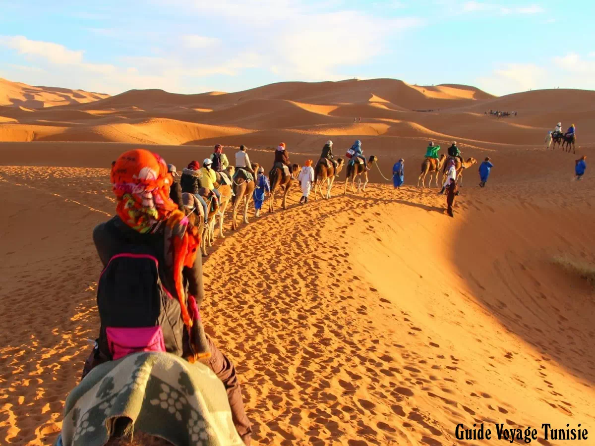

Guide du Voyageur · Tunisie
Un pays qui tient dans une valise mais qui contient des millénaires. Des plages de sable blanc aux dunes du Sahara, des médinas millénaires aux ruines romaines — la Tunisie est l'une des destinations les plus riches et les plus accessibles du bassin méditerranéen.
A — Villes principales
La Tunisie possède plusieurs grandes villes qui méritent chacune une visite. Chacune a sa propre personnalité, son atmosphère et ses trésors cachés. Des souks animés de Tunis aux plages de Sousse en passant par la médina industrieuse de Sfax — chaque ville est une aventure en soi.

Capitale · 2,7 millions d'habitants

2e ville · Industrie

Perle du Sahel · Tourisme
Capitale de la Tunisie depuis le Xe siècle, Tunis est une ville à double visage : d'un côté la médina médiévale classée UNESCO — avec ses souks spécialisés, ses palais aghlabides et ses mosquées — de l'autre la ville moderne avec ses larges avenues haussmanniennes et ses cafés animés.
Le musée national du Bardo, installé dans un ancien palais bey, abrite l'une des plus belles collections de mosaïques romaines au monde. À quelques kilomètres, les ruines de Carthage et le village bleu-blanc de Sidi Bou Saïd complètent un séjour inoubliable.
Deuxième ville de Tunisie, Sfax est souvent négligée par les touristes qui ont tort. Sa médina, entourée de remparts du IXe siècle d'une conservation exceptionnelle, est l'une des plus authentiques du pays — sans les foules et la touristification de Tunis.
La ville est le coeur de la production d'huile d'olive tunisienne. Ses huiles extra-vierges, primées dans les concours internationaux, sont un souvenir parfait. Les îles Kerkennah, accessibles en ferry, offrent une escapade de plages sauvages et de pêche traditionnelle.
Surnommée "la Perle du Sahel", Sousse est la grande destination balnéaire de la côte est tunisienne. Sa médina classée UNESCO, dominée par le Ribat — forteresse islamique du VIIIe siècle —, contraste avec les plages modernes et les complexes hôteliers de Port El Kantaoui.
Les catacombes de Sousse, parmi les plus importantes du monde chrétien après celles de Rome, s'étendent sur plus de 5 km de galeries souterraines. Le musée archéologique, installé dans la casbah, abrite une superbe collection de mosaïques romaines.
B — Sites touristiques
De l'île de Djerba aux ruines romaines de Dougga en passant par les dunes infinies du Sahara, la Tunisie concentre des merveilles extraordinaires sur un territoire compact.

Île · Plages · Culture
La plus grande île d'Afrique du Nord est un paradis de douceur et de diversité. Ses plages de sable blanc, ses villages aux maisons blanches et bleues, sa synagogue El Ghriba millénaire et son architecture berbère en font une destination unique au monde. L'île revendique aussi une tradition culinaire de la pêche du poulpe et des plats de la mer exceptionnels.

Archéologie · UNESCO · Romain
Classée au patrimoine mondial de l'UNESCO depuis 1997, Dougga — ancienne Thugga — est l'un des sites archéologiques romains les mieux préservés d'Afrique. Son théâtre du IIe siècle, son capitole avec ses trois temples dédiés à Jupiter, Junon et Minerve, ses bains, ses mausolées puniques et ses ruelles pavées constituent un ensemble cohérent et saisissant. Le festival annuel de théâtre y est organisé chaque été dans le décor antique.

Désert · Aventure · Nature
Le sud tunisien offre l'une des portes d'entrée les plus accessibles du grand Sahara. De Douz — "la porte du Sahara" — partent des excursions inoubliables vers les dunes de sable doré, les oasis de Ksar Ghilane, les villages berbères troglodytes de Matmata et les immenses étendues du Chott el Jerid. La nuit dans le désert, sous un ciel étoilé sans pollution lumineuse, est une expérience transformatrice.
C — Activités
La Tunisie offre une palette d'activités remarquablement diversifiée pour un pays aussi compact. En une semaine, il est possible de combiner plage, archéologie et aventure dans le désert.
Avec 1 300 km de côtes méditerranéennes, la Tunisie offre une variété de plages extraordinaire. Des eaux cristallines de Djerba aux criques sauvages du Cap Bon, des plages familiales animées de Hammamet aux spots de kitesurf de Kerkennah — chaque profil de voyageur trouve sa plage idéale.
La Tunisie est l'un des pays au monde qui concentre le plus de richesses archéologiques sur un territoire aussi réduit. 8 sites sont classés au patrimoine mondial de l'UNESCO. Des ruines puniques de Carthage aux sites romains de Dougga, en passant par les médinas islamiques médiévales — chaque visite est un bond dans le temps.
Le sud tunisien est l'une des portes d'entrée les plus accessibles du Sahara. Des agences organisent des circuits de quelques jours qui combinent dunes, oasis, villages berbères et nuits sous les étoiles. Une expérience inoubliable que la proximité de la Tunisie avec l'Europe rend particulièrement accessible.
Conseils pratiques
De nombreuses compagnies desservent Tunis-Carthage depuis toute l'Europe. Des vols low-cost opèrent aussi vers Djerba-Zarzis et Monastir. Depuis Paris, le vol dure environ 2h30. La Tunisie est à 2h de Rome et 3h de Madrid.
Les ressortissants européens et de nombreux pays n'ont pas besoin de visa pour un séjour touristique de moins de 3 mois. Un passeport valide suffit. Pour les Français, la carte d'identité nationale est acceptée.
La monnaie est le Dinar Tunisien (TND). Les euros et dollars sont échangeables dans les banques et bureaux de change. Préférez retirer en dinars sur place — il est interdit d'exporter des dinars hors de Tunisie. Les cartes bancaires sont acceptées dans les grands hôtels et restaurants.
La location de voiture est le moyen le plus flexible pour explorer le pays. Le réseau de louagés (taxis collectifs) est économique et couvre tout le pays. Le train relie les grandes villes du nord. Dans les villes, les taxis sont abordables et le métro léger de Tunis est pratique.
La Tunisie a un climat méditerranéen au nord (étés chauds et secs, hivers doux) et désertique au sud. Évitez le mois de juillet-août dans les villes — les températures dépassent souvent 40°C dans le sud. Le printemps et l'automne sont les meilleures saisons pour visiter.
La Tunisie est un pays musulman modéré et accueillant. Dans les médinas et sites religieux, couvrez les épaules et les genoux. Pendant le Ramadan, évitez de manger et boire en public dans la journée. Les Tunisiens sont réputés pour leur hospitalité — acceptez toujours un thé offert.
Ne manquez pas le lablabi au petit-déjeuner, le couscous du vendredi en famille, le brik à l'oeuf en entrée. Goûtez la harissa maison et les dattes du sud. L'eau du robinet n'est pas potable — préférez l'eau en bouteille. Le vin tunisien est de bonne qualité et accessible.
Rapportez de la harissa, de l'huile d'olive, des dattes, de la poterie de Nabeul, des tapis de Kairouan, de la chéchia de Tunis. Le marchandage est la norme dans les souks — commencez à la moitié du prix demandé. Les boutiques labellisées ONAT vendent de l'artisanat authentique à prix fixe.
Quand partir ?
Printemps
Mars — Mai
22°C
La meilleure saison. Températures douces, nature verdoyante, peu de touristes. Idéal pour les visites historiques et les randonnées.
Été
Juin — Août
35°C
Parfait pour les plages du nord. Évitez le sud — la chaleur dépasse 45°C dans le désert. Haute saison touristique, réservez à l'avance.
Automne
Sept — Nov
24°C
Excellente période. Mer encore chaude, températures agréables partout, foules réduites. La meilleure saison pour le désert du Sahara.
Hiver
Déc — Fév
14°C
Hiver doux au nord, frais dans le désert la nuit. Peu de touristes, prix bas. Idéal pour les visites culturelles de Tunis et Kairouan.
Budget
La Tunisie est l'une des destinations méditerranéennes les plus abordables. Le niveau de vie est nettement inférieur à celui de l'Europe, ce qui permet de voyager confortablement avec un budget modéré.
Les prix indiqués sont des fourchettes par personne et par jour, hors transport international. Ils varient selon la saison et la région — le nord et les zones touristiques sont légèrement plus chers que l'intérieur du pays.
Le dinar tunisien (TND) vaut environ 0,30€. Un repas dans un restaurant populaire coûte entre 5 et 15 TND — soit 1,5 à 4,5€ environ.